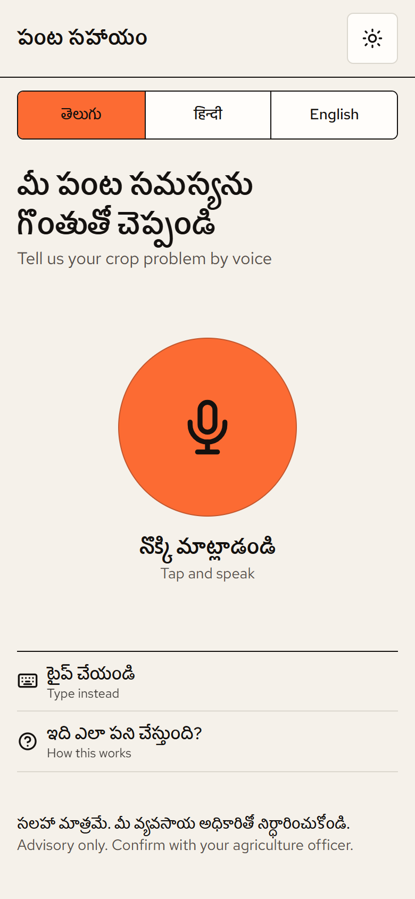
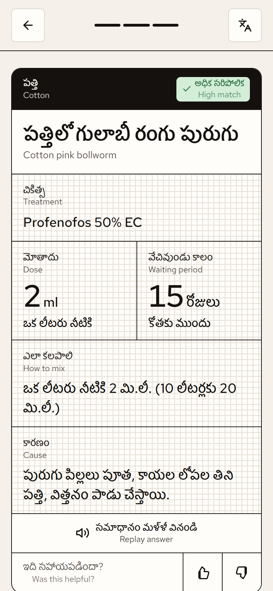
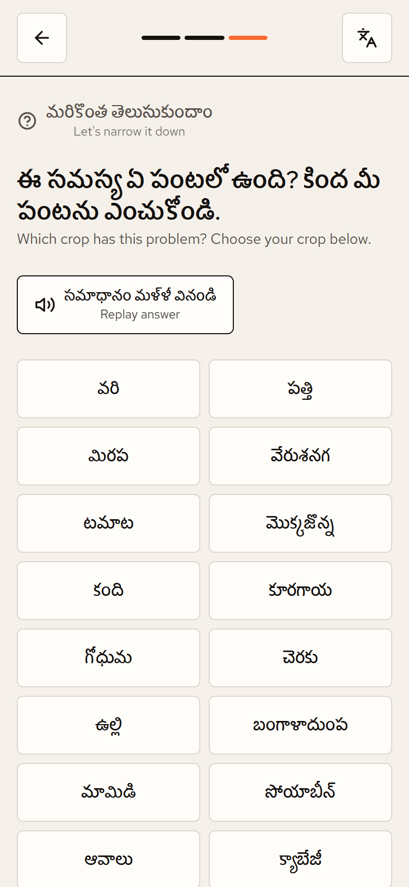
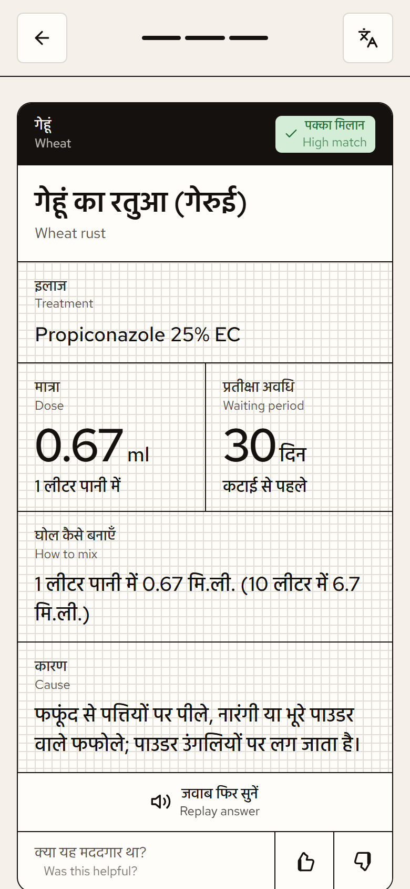
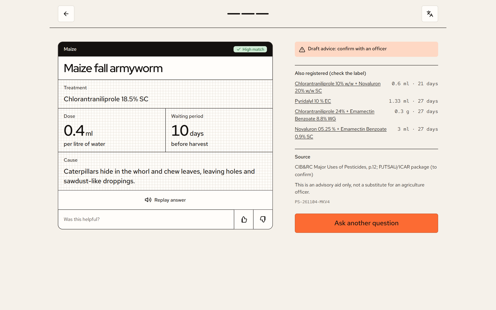

A farmer speaks the crop problem in Telugu, Hindi or English, and hears back the right registered spray, the right dose and the safe waiting period, powered by Gnani Prisma and Gnani Timbre.



When a pest or disease appears in the field, a small farmer must decide what to spray, how much, and when it is safe to harvest, often within days and often alone.
Small and marginal farmers, who hold the large majority of India's farm holdings (about 86% according to the Agriculture Census 2015-16). We start with farmers in Andhra Pradesh and Telangana (Telugu) and the Hindi-speaking states, with English for extension workers and students. The phone is already in their pocket; what's missing is help that listens and speaks their language and can be trusted.
How might a small farmer, using only their voice and their own language, get pesticide advice that is correct, officially registered and safe, in under a minute, without an app install or an account?
Pantha Sahayam ("crop help") is a voice-first web app. The farmer opens a link, taps one big microphone button and describes the problem in their own words. Gnani's speech models understand them and speak the answer back.
One big mic button. Up to 30 s of natural speech in Telugu, Hindi or English. Typing is optional.
Every product, dose and waiting period comes from the Government of India's CIB&RC registration list, and is checked automatically.
It works in any phone browser through a link. No account, no OTP, no app store.
| Feature | What it means for the farmer |
|---|---|
| Answer in text + voice | The problem's name and cause, the product, the dose per litre, how to mix 10 litres and the days to wait before harvest, spoken aloud by Gnani Timbre. |
| Change language anytime | A small language key at the top re-reads the same answer, text and voice, in Telugu, Hindi or English. Useful when a son or daughter, an officer or a shopkeeper is helping. |
| "You said…" check | Before answering, the app shows what it heard. The farmer can fix it, so a mis-heard word never becomes a wrong spray. |
| No dead ends | A broad question like "there are caterpillars on my plant" leads to "which crop?", then that crop's caterpillar problems as buttons, then the answer. |
| Waiting period by crop | The same spray can need 3 days on tomato but 29 days on pigeon pea. The app uses the farmer's crop, and the longest period when the crop is unknown. |
| Other registered sprays | Alternatives registered for that crop and pest, each linked to its page in the official government PDF. |
| Safety net | "Draft advice: confirm with an officer" until an expert verifies each entry, plus a one-tap call to the free Kisan Call Centre 1800-180-1551. |
We use Gnani's models for what they do best, understanding and producing Indian-language speech. The advice itself comes from a checked knowledge base tied row by row to the government registry. A wrong pesticide dose can hurt a family, so we chose safety over a free-form chatbot.
| Layer | What runs there |
|---|---|
| Phone browser | React app: screens, mic recording and live level meter, 16 kHz WAV conversion, audio playback, language switch |
| API server | Flask + Waitress: /api/advise, /api/answer (language switch), /api/feedback, /api/health. The same server serves the React app. |
| Intelligence | Symptom matcher · guided crop and problem choices · answer templates in 3 languages · dose guard · registry lookups |
| Data | knowledge_base.json (41 problems × 3 languages) · pesticides.db (2,243 CIB&RC uses, SQLite) |
| Gnani AI | Prisma (speech → text) and Timbre (text → voice), called only from the server, so the API key never reaches the phone |
| Hosting | One Docker image (React build + Python server). Deploys on Vercel or Render as a single https link. |
| Model | Role in Pantha Sahayam | Integration |
|---|---|---|
| Gnani Prisma v2.5 speech-to-text |
Understands the farmer's spoken problem in Telugu (te-IN), Hindi (hi-IN) and English (en-IN), the core input of the app. | POST api.vachana.ai/stt/v3: multipart WAV + language code; clips up to 30 s. prisma-v3.0 is one setting away. |
| Gnani Timbre v3.0 text-to-speech, voice "Lakshmi" |
Speaks every answer, follow-up question and choice prompt in the farmer's language, including when the language is switched. | POST /api/v1/tts/inference, returning WAV (22,050 Hz). Timbre v2.5 voices (Lavanya, Nalini, Kaveri) can be chosen by setting. |
We evaluated Gnani's Evon language model. Our position is a deliberate design choice:
| Tech | Use |
|---|---|
| React 18 | Screens as one state machine, back-button support |
| Vite 5 | Build (~57 kB JavaScript after gzip) |
| MediaRecorder + Web Audio | Recording, live mic meter, silence detection, 16 kHz WAV |
| Web Speech API | Fallback recognition and voice |
| CSS design tokens | No UI framework; 44 px+ touch targets, sunlight mode, phone / tablet / desktop layouts |
| Hind Guntur · Hind · Red Hat | Proper Telugu and Devanagari rendering |
| Tech | Use |
|---|---|
| Python 3.12 | API, matcher, data tools |
| Flask 3 + Waitress | API server, also serves the React build |
| SQLite | Official registry: 2,243 CIB&RC uses, read-only |
| JSON knowledge base | 41 problems × 3 languages |
| requests · dotenv · CORS | Gnani calls, settings, origin allow-list |
| PyMuPDF (tool) | Reads the official PDFs table by table into SQLite |
| Tool | Use |
|---|---|
| pytest | 46 automated tests |
| audit_kb.py | Every dose vs. official rows; fails the build on drift |
| Rate limit | Per device, protects Gnani credits |
| Pilot log | Reference code on every answer, plus ratings |
| Tool | Use |
|---|---|
| Docker | Multi-stage: Node builds UI → Python serves all |
| Vercel / Render | One https link; microphone works on phones |
| GitHub | github.com/ghosttech07/Farmer-app |
| Secrets | Gnani key only as a host environment variable |
Trust is the product. Every number a farmer hears can be traced to a government document.
| Source | What we use it for |
|---|---|
| CIB&RC, Major Uses of Pesticides | Central Insecticide Board & Registration Committee, Directorate of Plant Protection, Quarantine & Storage, Govt. of India (ppqs.gov.in), as on 30.09.2026. Every product, dose and waiting period, plus the full registry (insecticides, fungicides, bio-insecticides, bio-fungicides). |
| TNAU Agritech Portal | Tamil Nadu Agricultural University: symptom descriptions of pests and diseases. |
| Kisan Call Centre | 1800-180-1551, the free national helpline used as the safety net. |
41 problems across 16 crops: rice, cotton, chilli, groundnut, tomato, maize, pulses, vegetables (brinjal, okra), wheat, sugarcane, onion, potato, mango, soybean, mustard and cabbage. They include pests (borers, armyworm, bollworms, leaf folder, aphids, whitefly, thrips, jassids, mites, hoppers, mealybug) and diseases (blast, sheath blight, blights, rusts, mildew, leaf spots, fruit rot). The knowledge base grows by adding entries; the audit checks each one against the registry automatically.


| Next | Plan |
|---|---|
| Pilot | 10–15 farmers; the built-in pilot log and report measure answered rate, usefulness and what farmers did next |
| Coverage | Add the problems farmers actually ask about (from the pilot log); more Gnani-supported languages (Tamil, Kannada, Marathi…) |
| Expert loop | Officer review of entries; verified badge on answers |
| More help | Mandi crop prices (Agmarknet), weather-based spray timing, photo of the leaf as extra evidence |
| Evon | Conversational answers through a hosted Evon endpoint, kept behind the number guard |
Record on a phone using the deployed link (screen recording with sound). Speak the voice-over in English; the farmer lines are in Telugu and Hindi, and the app's Gnani voice plays as it is.
| Time | On screen | Voice-over / what is said |
|---|---|---|
| 0:00–0:06 | Close-up of the home screen in Telugu, mic glowing | "When pests attack, a small farmer has to decide what to spray, how much, and when it's safe to harvest. Usually alone." |
| 0:06–0:16 | Tap mic; speak: పత్తి కాయల్లో గులాబీ రంగు పురుగు ఉంది | "Pantha Sahayam lets them just speak, in Telugu, Hindi or English. Gnani Prisma turns the voice into text." |
| 0:16–0:22 | "You said…" screen → tap Yes, that's right | "The farmer checks what we heard, so a wrong word never becomes a wrong spray." |
| 0:22–0:34 | Answer card: Profenofos 50% EC · 2 ml per litre · 15 days. Gnani Timbre speaks it in Telugu (let 3–4 s play) | "The answer comes back as text and voice: the product, the dose per litre and the days to wait before harvest, all from the Government of India's CIB&RC registry." |
| 0:34–0:42 | Tap the language key → हिन्दी; the Hindi voice plays | "Switch language anytime, and Gnani Timbre speaks it again." |
| 0:42–0:53 | New question: నా మొక్కకు గొంగళి పురుగులు ఉన్నాయి → crop buttons → tap టమాట → tap the problem → answer | "Even a vague question gets help: which crop, which problem, then the checked answer." |
| 0:53–1:00 | Title card: logo, "Gnani Prisma + Timbre · 41 checked problems · every dose official" | "Pantha Sahayam. Speak your problem. Hear the right answer. Built with Gnani AI." |
Opening (problem). "Imagine a cotton farmer in Telangana who finds pink worms inside her cotton bolls. She needs to know what to spray, how much and when it's safe to pick, and today she asks the shop that sells the spray. Wrong products, double doses and spraying too close to harvest cost farmers money and health, and put residues on our food."
Why now. "She has a phone, but most farm apps are typed, English-first and need a login. She'd rather talk, in Telugu."
Solution. "Pantha Sahayam is a voice-first web app. She opens a link, taps one button and speaks. Gnani Prisma understands her Telugu, Hindi or English. She confirms what we heard. Then she gets the product, the dose per litre and the days to wait before harvest, on screen and spoken by Gnani Timbre. She can switch the language anytime. A vague question like 'caterpillars on my plant' becomes: which crop, which problem, answer."
Trust. "We made one hard choice: AI listens and speaks, but it never invents advice. Every dose comes from the Government of India's pesticide registration list, 2,243 official uses that we turned into a database, and an automatic audit checks every answer against it. It already caught two real mistakes before any farmer saw them. When we're not sure, we ask one question or connect her to the Kisan Call Centre."
Tech. "React on the phone; Python and Flask on the server; Gnani Prisma and Timbre for speech; SQLite for the official registry; one Docker image on Vercel; 46 automated tests."
Close. "Next we pilot with farmers, add the problems they actually ask about, and get every entry verified by agriculture officers. Pantha Sahayam: speak your problem, hear the right answer."
| Member | Contribution |
|---|---|
| Name | e.g. product idea, farmer research, Telugu content, testing |
| Name | e.g. backend, Gnani integration, data pipeline |
| Name | e.g. frontend, design, demo video |
| Link | Address |
|---|---|
| Live app | https://….vercel.app |
| Source code | https://github.com/ghosttech07/Farmer-app |
| Demo video | link |